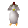
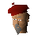
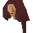

Tutorial Island
Town at 3105, 3099 · Kingdom Of Misthalin
Open on the world map → Open in knowledge graph → Below: Tutorial Island (underground)
NPCs
| NPC | Level | Spawns | Notable drops |
|---|---|---|---|
 Chicken | 3 | 5 | |
| 1 | |||
| Butterfly | 4 | ||
| Butterfly | 4 | ||
| Butterfly | 1 | ||
| 3 | |||
| 1 | |||
 RuneScape Guide | 1 | ||
 Survival Expert | 1 |